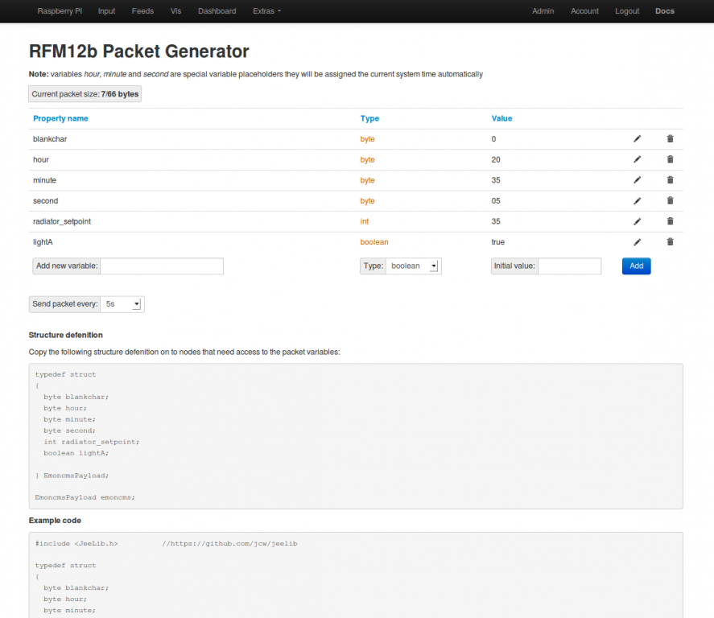

Just rebuilt my system using the new Raspberry Pi + Hard drive image. Sorted out the inputs and created some feeds, noticed after about 10 minutes of normal running the time displayed on the LCD suddenly starts leaping about all over the place after having correctly displayed the time. It will jump to a seemingly random time then on the Raspberry Pi time update interval display the correct time for a couple of seconds then revert back to the wrong time.
I am running the "HomeEnergyMonitor" sketch on the LCD, has the data transmitted by the rfm12PI module changed in this new build? Do I need to update the LCD sketch or is something else going wrong here?
Previously the system was working fine (till my SD card died) for a good 3 months.
I'm going to modify the LCD sketch to add in a few print statements so I can check in the serial console what it is receiving, but if anyone has a good idea what is going on, or how to debug this I would really appreciate the help.
Keith
Re: emonGLCD Time display erratic after 10 minutes normal running - solved
Hello Keith, my mistake, the new control packet module is sending on the same node id, I will make an update to fix it.
The easy way to get it to work straight away before a better fix is to remove the control packet addition which can be done by doing the following:
Re: emonGLCD Time display erratic after 10 minutes normal running - solved
Many thanks Trystan, I'll try the update first thing tomorrow. Glad it's not something I had done wrong.
Keith
Re: emonGLCD Time display erratic after 10 minutes normal running - solved
For people interested in sending control packets as well as emonglcd time or sending the time to control nodes. I've added a new feature to the packetgen module that moves the time packet generation to packetgen and out of raspberrypi_run.php
The commit is here: https://github.com/emoncms/packetgen/commit/371b9cefa5d0e1818c55d24bdfed2611796f6d61
To use this update these are the steps on the raspberrypi:
Which moves to the packetgen folder, downloads the update from github, copies over the new raspberrypi_run.php script and then restarts the rfm12piphp service. (You can copy and paste all 4 lines at once, you may need to press enter)
Re: emonGLCD Time display erratic after 10 minutes normal running - solved
For the default emonglcd sketch to detect the time packet generated by packetgen a control packet that starts like this needs to be created:
The variable names hour, minute, second are special names that tell the module to automatically set the values of these variables to the system time:
